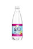
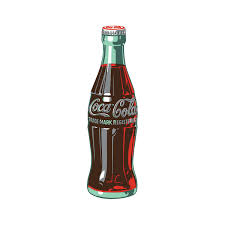
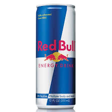

This many seem like it's less meaningful than the other pages but ironically drinks are really important to me cause i have sever brand loyalty.The only drinks that i drink most of the time are Polar seltzers, coke and red bull. Each of these drinks is different in the way they taste however i have a stong liking to all of them.
polar seltzers are by far my favorite drink and on average I drink 3 a day.
Coke for me is more of a weekly thing however it is by far my favorite soda and usually the only soda i drink at all.
Red bull is the only drink where it depends on the day i'm having if ill drink it on average I consume 2-3 red bull's a week usally if im feeling very tired that day.